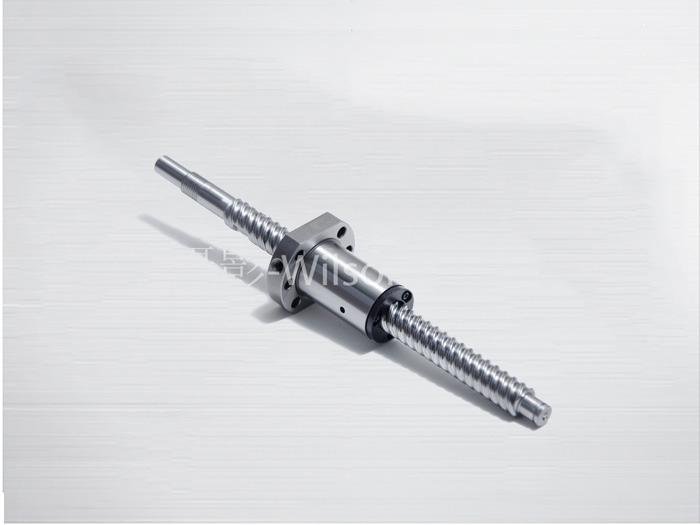
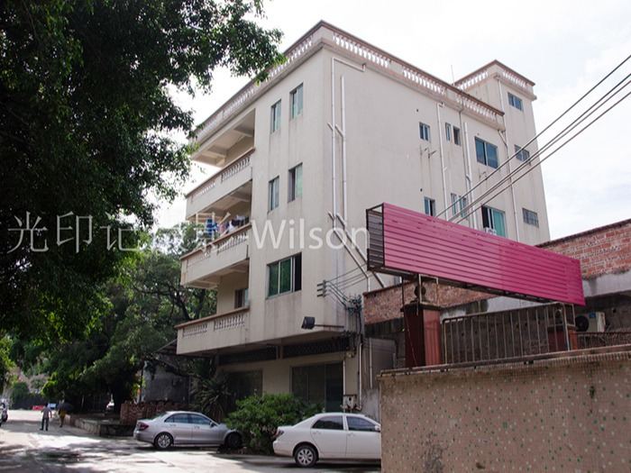
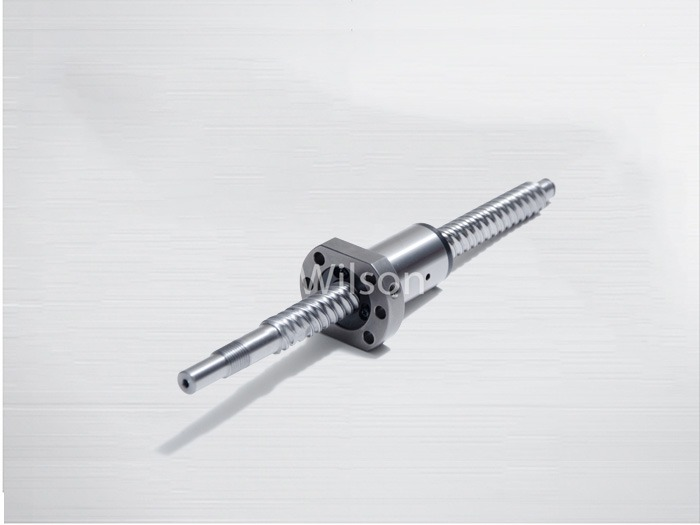
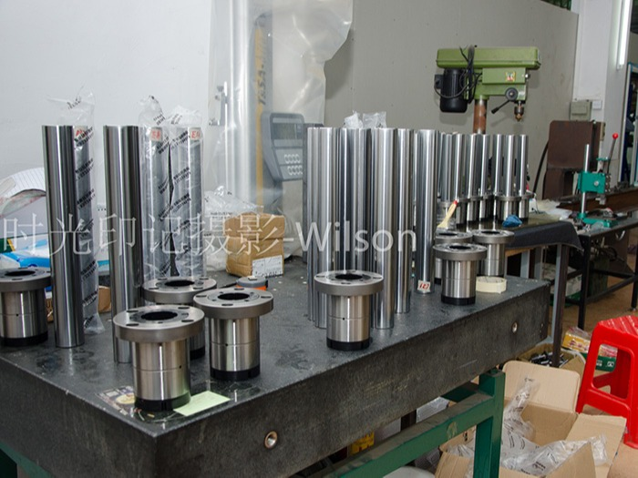

首页
关于启英
产品中心
招商代理
启英动态
联系启英
阿里巴巴
热门关键词：
您的位置:
首页
>
启英动态
启英机械资讯中心
启英动态
招商代理
知识百科
常见问题
客户案例
水平多关节机器人（SCARA）
汽车检测设备
自动装载机
医疗设备
镭射加工机
机械加工心ATC装置
锂电设备
印刷设备
全国服务热线：
13712894698
启英机械预测未来滚珠丝杠的发展趋势
头条
多年以来,由于滚珠丝杠具有高效率、高精度、高刚度等特点,被广泛应用于机械、航天、航空、核工业等领域。现在,滚珠丝杠副已成为机械传动与定位的精选部件。启英机械设备是一家丝杆制造技术相对成熟的企业,他们的精密滚珠丝杠无论是质量，还是精密度都是国内丝杆行业的先行者，下面启英机械就来分析…
详情

启英机械浅谈高精度滚珠丝杆对于机器人的重要性
科技是人类集体智慧的结晶，任何科技产品都不能独善其身，它的诞生是设计者用自己的聪慧才智把多方面科技融合到一起的产物。滚珠丝杆作为传动部件，在高科技产品中也发挥着举足轻重的作用。
了解详情

启英机械告诉你，著名滚珠丝杆厂家离不开哪些因素
在滚珠丝杆行业领域内，任何一家企业都不是一步登天，都是通过漫长的时间积累，在漫长的时间里，积累丰富的生产实践经验和不计其数的成功、失败经验，一点点的成长起来。下面启英机械就来说下，一个受欢迎的滚珠丝杆…
了解详情

启英高精度滚珠丝杠传发展成为必然趋势
如今，数控机床制造技术正在向着高精度、高可靠性、高速度、数字化及智能化方向发展。而滚珠丝杠运转是否平稳，主要取决于滚珠丝杠摩擦力矩的变动量。而且摩擦力矩影响丝杠的定位精度，研究启英高精密滚珠丝杠副摩擦…
了解详情

启英机械预测未来滚珠丝杠的发展趋势
多年以来,由于滚珠丝杠具有高效率、高精度、高刚度等特点,被广泛应用于机械、航天、航空、核工业等领域。现在,滚珠丝杠副已成为机械传动与定位的精选部件。启英机械设备是一家丝杆制造技术相对成熟的企业,他们的…
了解详情
启英机械分析高速经济发展对机床直线导轨的影响
随着经济的高速发展，我们在机床数控行业领域的技术也在不断改革、创新，无论是整体质量标准，还是精度系数都有了很大的转变，在这个工业发展如此之快的今天，启英机械就此分析一下，高速发展的时代对于机床直线导轨…
了解详情
首页
上一页
6
7
8
下一页
末页
QQ咨询
咨询热线
13712894698
在线留言
微信扫一扫
返回顶部
☎ 咨询热线：13712894698


 扫一扫
扫一扫